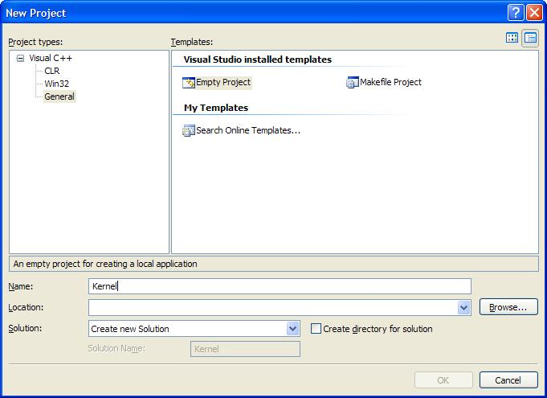

MSVC++ 2005, 2008, 2010
Welcome! 😀
This tutorial covers setting up Microsoft Visual C++ 2005 to work in Kernel Land. This will allow us to use, and completely work in, the nice MSVC++ 2005 IDE.
We will be using the Express Edition. If you have the professional edition, some of the screen shots will be different. Do not worry as most of the options are still the same.
This tutorial will also work fine if you have Visual C++ 2008 or Visual C++ 2010 (with some slight modifications in what options to set).
Getting a high level language to work can be tricky to work and set up with. Getting the build envirement to work itself adds on even more complexity.
The first problem, for example, is that MSVC++ only outputs Win32-compilent PE executables and DLL's. And, at our current stage, we only have a flat, pure binary program loaded at absolute address 1 MB. How do we execute a full blown C++ program, from our flat pure-assembler program?
And yet, that is the beginning of the problems. C++ itself relies on the C++ runtime library. So? The C++ runtime library relies on the operating system. Because we are developing the operating system, C++ has no standard library to work with within our operating system. This means, that we have to work without any standard runtime.
But wait! Remember that, in application software, the runtime needs to initialize everything for our C++ envirement (Such as executing global constructors, providing basic C++ operation support, and executing our main())? Because we have no runtime, we have to do everything ourselves. This produces an interesting chicken and egg scenario: How can we develop a runtime envirement without a runtime for it to work in?
As you can probably see, it can be quite tricky to get C++ to even work properly.
In this tutorial, we are going to set up MSVC++ 2005 for kernel development, and set up the language to work for us. We will also be watching for runtime integrations (i.e, watching where basic C++ relies on the runtime, so we can build our own).
Please note, however, that some C++ features rely on details that we have yet to impliment. These details are fairly advanced. For example, the C++ new and delete operaters require that we have a working memory manager already. As such, this section cannot cover everything just yet. Nontheless, we will set as much things up as possible here.
Ready?
Setting up a new Project
Just like almost any other project, creating a project is fairly straightfoward.
Within the IDE, Select File->New->Project. You should see a nice dialog:

Notice that the Empty Project setting is selected under Installed Templates.
Now, type in the name of the project, and choose the project location. When you are done, select the "OK" button, which should be highlighted.
Your new project should now be created.
The Build Envirement - Project Properties
This is great! The problem, however, is that the compilier assumes we are building a basic Win32 application. As such, it sets all of the project properties to it's default configuation, and links the Standard C++ Runtime libraries--which will not work for us.
Because of this, we need to change the configuation settings.
To access Project Properties, Right Click the project name, and select Properties. You should recieve a dialog, simular to the following:

All of the configuation settings are discussed in the same format listed in the above picture (Please look at the left plane).
Project Wide Settings
Most configuation settings depend entirely on the envirement that is being built on. Remember that we are still in a very low level envirement. A Single wrong instruction produced by the compilier can make our code triple fault.
Also, remember that We are still at Ring 0. As such, we still have control over every little thing. This is important, because if the code the compilier produces does not work with our current operating system setup, the code will triple fault.
This is a problem. Alot of the configuation settings effect the output code. Weather these changes cause a triple fault, or work completely depends on the layout of your operating system, and its configuations. Alot of these changes do not need to be changed. However, because certain configuations may cause a triple fault, this indicates to be extra careful when trying to produce "The fastest and greatest code" from your C++ compilier.
There are, however, some options that REQUIRE changing. These are the options that I will look at here. I will also cover some other options that one may find helpful. I will explain these specific options in depth.
At the end of this section, I will post my current configuation, cool? This way, you can compare your configuations, and learn about setting up MSVC++ 2005.
Configuation Type
We are going to be building the kernel as an executable, so keep this as Application (.exe). This setting is located under General (Please see the image shown in the above section to locate Configuation Type).
C++ Configuation Settings
Looking at the above image again, you will see the C/C++ and Linker properties expanded. the C/C++ properties include General, Optomization, Preprocessor, Code Generation, etc. We will cover these properties here.
C/C++ > General
None of these options we are not required to change. There are a couple of options I want to look at here, however.
Additional Include Directories: This option allows us to provide our own path for INCLUDE files. This will allow us to use the format when including our own files:
#include <myheader.h>
This can be usefull when seperating the inlcusion of files within the same directory (#include "myheader.h") and including files within a standard Kernel include directory (#include <myheader.h>)
Debug Information Format: Although we are using MSVC++, we Cannot use it's debugging features. Debuggers require a runtime envirement to run in (and to hook) with an application. Because we do not have a runtime envirement, you should Disable this.
Normally, Adding debuggng information will not cause any problems. However, because we are unable to use the debugger right now, there is no reason to generate debug info.
Warning Level: Operating System code can get very complex. It is important that we can track even the slightest of potential problems. Because of this, I recommend to Set this to the highest level.
C/C++ > Optomization
Optimization: This can be set to any option. If a specific setting causes the code to crash, disassemble the code and try to find out why. All source code in this series have been tested with all optomization levels to work.
Omit Frame Pointers: This is not required; but setting this option frees up ESP so we may use it.
C/C++ > Preprocessor
Preprocessor Definitions: Throughout the source code, I will be hiding all x86 architecture dependencies behind a special preprocessor constant. This makes it easier to port non-portable code to other architectures. This constant is ARCH_X86. This can be #define'd, but putting ARCH_X86 here is easier 😉
Ignore Standard Include Path: Remember we do not have a standard library anymore? 😀
C/C++ > Code Generation
There are a few options that I want to go over.
Enable C++ Exceptions: This requires runtime support, which we do not have. I plan on implimenting exception handling soon, though. Until then, this should be set to No.
Struct Member Alignment: While writing the Kernel, we will be using alot of classes and structures. Most of these must be byte aligned. Most compiliers add extra padding (for speed) to these structures, which will throw off the alignment that we need. Because of this, set this to 1 Byte (/Zp1)
Buffer Security Check: When enabled, MSVC++ adds extra code to test for possible buffer under and overruns. This relies on the MSVC++ runtime, which we cannot use. Because of this, we cannot use this. Set this to No (/GS-)
C/C++ > Language
Enable Run-Time Type Info: Run Time Type Info (RTTI) requires runtime support. Because we are disabling the runtime, we cannot use this. Set to No (/GR-)
C/C++ > Advanced
No changes needed here. I do personally recommend using __cdecl over __stdcall, as __cdecl seems to have a cleaner symbol names. It does not really matter though.
C/C++ > Command Line
Here is the command line that I am using. If you are having difficulty, feel free to use this as a refrence. You can also see all of these options set in the demo at the end of this chapter.
/O2 /Oy /I "..\Include\\" /D "ARCH_X86" /X /FD /MT /Zp1 /GS- /GR- /FAs /Fa"Debug\\"
/Fo"Debug\\" /Fd"Debug\vc80.pdb" /W4 /nologo /c /Gd /TP /errorReport:prompt
Compare this command line with the one you currently have. You may have additional options, depending on weather you decided to add more options.
Linker Configuation Settings
The linker is very important to us for a number of reasons. It is responsible for creating the final symbolic names the compilier produces. These symbolic names represent numerical addresses for varables, routines, and constants. For example, the routine "main()" might be compilied into the symbolic name "_main". In assembly language, we refrence varables and routines by their symbolic names. Because of this, to call a C++ main() routine, we will normally do this:
call _main ; call C++ main() routine
The linker produces a linker map with all of these symbolic names. This will be very important with debugging and testing. With this, there are some linker settings that are required, while others are optional. The optional settings may or may not work depending on your envirement settings and configuations.
Linker > General
There are no options that require changing here. If you are using a real (or virtual) floppy drive, I personally recommend setting the Output File to point to the floppy drive. This way, the final binary will be placed into the floppy disk, allowing us to immediately test the Kernel in the emulator.
Linker > Input
Additional Dependencies: By default, MSVC++ automatically links in a number of its libraries, including kernel32.lib, user32.lib, gdi32.lib, winspool.lib and more. Because we never use them, they will not cause any problems. They will add extra uneeded bloat to your kernel, though. Setting this to $(NOINHERIT) will fix this so they will not be linked.
Ignore Default Libraries: There is no standard library, so set this to Yes (/NODEFAULTLIB)
Linker > Debugging
Remember that the linker can generate a mapfile? This allows us to see the relitive address locations of all global symbolic names. This will be very important to us, coinsidering we are still at the binary image level. To do this:
- Set Generate Map File to Yes (/MAP)
- Set Map File Name to the name of the mapfile to generate.
- Hit Apply
Linker > System
SubSystem: This value is stored within the program file. It tells the operating system how to run the application. Because this is a driver application, set this to Native (/SUBSYSTEM:NATIVE).
Driver: This option insures to build this program as a kernel-level driver. This automatically envokes the /FIXED:NO option (instead of the standard /FIXED option), which generates a relocation section, instead of a fixed base address. Because we are developing a driver application, set this option to Driver (/DRIVER).
Linker > Optimization
Setting Refrences to Eleminate unrefrenced data removes all unrefrenced symbols (such as varables and functions that are never used.) I recommend setting this option to reduce the number of symbols from the linker map, and to reduce kernel size.
Setting Enable COMDAT folding to Remove redundent COMDATS will also reduce the size of the Kernel, and the number of redundent COMDATS.
Linker > Advanced
Entry Point: This should be set to the entry point of your kernel. In our system, this will be kernel_entry.
Base Address: This is the base address that the image will be loaded to. Remember that the kernel is loaded to 1MB? Because of this, this should be set to 0x100000.
Fixed Base Address: This will be automatically envoked by the linker. Set this to Generate a relocation section (/FIXED:NO).
Linker > Command Line
Additional options: Add /ALIGN:512 to the Additional options text box. This is required to insure proper section alignment. Not doing so will cause problems executing the kernel or triple faults.
The command line: Thats all! Compare your command line with the following. You may have additional options depending on your envirement setup.
/OUT:"A:\KRNL32.EXE" /INCREMENTAL:NO /NOLOGO /LIBPATH:"..\Lib\\" /MANIFEST:NO
/NODEFAULTLIB /MAP:"Kernel.map" /SUBSYSTEM:NATIVE /DRIVER /OPT:REF /OPT:ICF /ENTRY:"kernel_entry"
/BASE:"0x100000" /FIXED:No /ERRORREPORT:PROMPT
Executing the PE Kernel
I do not plan on going over the entire format of executable files here. Not until we cover program and task managers, anyways.
The problem, however, is that MSVC++ can only output COFF and PE file formats. Because of this, we have to find a way of parsing it from within our Stage 2 bootloader.
Because I do not plan on describing the PE format in detail yet, I will first describe its basic format, and how the code works. Lets take a look!
File Format
Once we have loaded a file image into memory, it is simply a direct copy of the image file on disk. Because of this, in order to parse the file, all we need to do is read it from where we loaded it from memory.
Understanding how to parse file formats are very important. Remember that the FIRST byte within the FIRST structure actually represents the FIRST byte from where it is loaded at in memory.
_IMAGE_DOS_HEADER
This structure is the very first structure within the PE file.
typedef struct _IMAGE_DOS_HEADER { // DOS .EXE header
USHORT e_magic; // Magic number (Should be MZ)
USHORT e_cblp; // Bytes on last page of file
USHORT e_cp; // Pages in file
USHORT e_crlc; // Relocations
USHORT e_cparhdr; // Size of header in paragraphs
USHORT e_minalloc; // Minimum extra paragraphs needed
USHORT e_maxalloc; // Maximum extra paragraphs needed
USHORT e_ss; // Initial (relative) SS value
USHORT e_sp; // Initial SP value
USHORT e_csum; // Checksum
USHORT e_ip; // Initial IP value
USHORT e_cs; // Initial (relative) CS value
USHORT e_lfarlc; // File address of relocation table
USHORT e_ovno; // Overlay number
USHORT e_res[4]; // Reserved words
USHORT e_oemid; // OEM identifier (for e_oeminfo)
USHORT e_oeminfo; // OEM information; e_oemid specific
USHORT e_res2[10]; // Reserved words
LONG e_lfanew; // File address of new exe header
} IMAGE_DOS_HEADER, *PIMAGE_DOS_HEADER;
We do not need to fully understand this yet, until we create a full PE loader. For now, because we are only looking for the entry routine address, we need to find the entry routine address from the _IMAGE_FILE_HEADER structure, which contains the start of the PE header.
The address of the _IMAGE_FILE_HEADER structure is inside of the e_lfanew member of the _IMAGE_DOS_HEADER. So, in order to access this member, we refrence the byte offset from where it is loaded in memory:
mov ebx, [IMAGE_PMODE_BASE+60] ; e_lfanew is a 4 byte offset address of the PE header; it is 60th byte. Get it
add ebx, IMAGE_PMODE_BASE ; add base
Yey! Noe EBX contains the starting address of the _IMAGE_FILE_HEADER structure. This assumes our PE kernel image was loaded at IMAGE_PMODE_BASE.
Real Mode DOS Stub Program
Okay then! Lets look back up at the PE file image structure again (The above picture.) Notice how a DOS stub program is right after the _IMAGE_DOS_HEADER. This is a useful program, actually. This is the program that displays "This program cannot be run in DOS Mode", if you try to execute a Windows program from within DOS.
It is possible to change the program that is executed. This allows us to embed our own program to execute, instead of the dull default one. We do this is MSVC++ using the STUB command line option. For example:
/STUB=myprog.exe
As long as myprog.exe is a 32 bit application, MSVC++ will embed that program as the DOS stub program, insead of the dull default one. Cool? This can be usefull for a verity of reasons. Who knows--Perhaps provide a specialized DOS version of your program?
Because our kernel is an EXE file, it is possible for users to double-click and attempt to run it from Windows. Instead, this DOS stub program will run instead. Cool, huh?
Anywhoo...Because the size of this program is not constant, we need to jump over it to the next section--the _IMAGE_FILE_HEADER. This is why we needed to get the location of _IMAGE_FILE_HEADER from the _IMAGE_DOS_HEADER struct.
_IMAGE_FILE_HEADER
typedef struct _IMAGE_FILE_HEADER {
USHORT Machine;
USHORT NumberOfSections;
ULONG TimeDateStamp;
ULONG PointerToSymbolTable;
ULONG NumberOfSymbols;
USHORT SizeOfOptionalHeader;
USHORT Characteristics;
} IMAGE_FILE_HEADER, *PIMAGE_FILE_HEADER;
Okay...Remember that EBX now contains the starting address of this structure. This structure is useful, but not for what we need. We need a way of executing the entry point routine, remember? Knowing that this struct is 24 bytes in size, and the _IMAGE_OPTIONAL_HEADER structure is right after it, we can just skip this structure for now:
mov ebx, [IMAGE_PMODE_BASE+60] ; e_lfanew is a 4 byte offset address of the PE header; it is 60th byte. Get it
add ebx, IMAGE_PMODE_BASE ; add base
; EBX now points to beginning of _IMAGE_FILE_HEADER. Jump over it to the next section (_IMAGE_OPTIONAL_HEADER)
add ebx, 24
_IMAGE_OPTIONAL_HEADER
struct _IMAGE_OPTIONAL_HEADER {
//
// Standard fields.
//
USHORT Magic;
UCHAR MajorLinkerVersion;
UCHAR MinorLinkerVersion;
ULONG SizeOfCode;
ULONG SizeOfInitializedData;
ULONG SizeOfUninitializedData;
ULONG AddressOfEntryPoint; << IMPORTANT!
ULONG BaseOfCode;
ULONG BaseOfData;
//
// NT additional fields.
//
ULONG ImageBase;
ULONG SectionAlignment;
ULONG FileAlignment;
USHORT MajorOperatingSystemVersion;
USHORT MinorOperatingSystemVersion;
USHORT MajorImageVersion;
USHORT MinorImageVersion;
USHORT MajorSubsystemVersion;
USHORT MinorSubsystemVersion;
ULONG Reserved1;
ULONG SizeOfImage;
ULONG SizeOfHeaders;
ULONG CheckSum;
USHORT Subsystem;
USHORT DllCharacteristics;
ULONG SizeOfStackReserve;
ULONG SizeOfStackCommit;
ULONG SizeOfHeapReserve;
ULONG SizeOfHeapCommit;
ULONG LoaderFlags;
ULONG NumberOfRvaAndSizes;
IMAGE_DATA_DIRECTORY DataDirectory[IMAGE_NUMBEROF_DIRECTORY_ENTRIES];
} IMAGE_OPTIONAL_HEADER, *PIMAGE_OPTIONAL_HEADER;
THIS is an important structure. While its name states that it is "optional"--It is not, so do not worry about that. It is a required structure for all PE programs.
The important member here is AddressOfEntryPoint which contains...erm... The address of the entry point routine. For example...main(), mainCRTStartup(), whatever suits your needs.
Knowing that EBX points to the beginning of this structure, all we now need to do is refrence EBX+AddressOfEntryPoint. Read from that location, and we have the beginning address of the starting routine to call. After we get this address, all we need to do is far jump to that location, and we effectivly call our C++ entry point!
Putting it together
Now that everything is set up, lets try to put this all together.
Remember that the image is loaded at IMAGE_PMODE_BASE:
mov ebx, [IMAGE_PMODE_BASE+60] ; e_lfanew is 60th byte. Get it
add ebx, IMAGE_PMODE_BASE ; Add base address. EBX now points to file sig (PE00)
Because the image is loaded at PMODE_IMAGE_BASE, that is where the first byte of the first structure--_IMAGE_DOS_HEADER, is located. Remember that the e_lfanew member of the _DOS_IMAGE_FILE structure contains the address of the _IMAGE_FILE_HEADER. Because this is an offset address (Assuming base 0), we have to add the base address to where we loaded it in memory.
; jump over to optional header (Although it isnt optional o.0 )
add ebx, 24
mov eax, [ebx] ; _IMAGE_FILE_HEADER is 20 bytes + size of sig (4 bytes)
add ebx, 16 ; address of entry point is now in ebx
Now EBX points to the beginning of _IMAGE_FILE_HEADER. The first lines jumps over this section (As we do not need it now). So, after the first instruction here, EBX now points to the beginning of the _IMAGE_OPTONAL_HEADER structure, where we can begin looking for the AddressOfEntryPoint member. This member is 16 bytes from the start, so we add 16 to EBX.
Now, EBX contains the address of the entry point routine. Before calling it, however, we need to add the image base address to the entry point address. That is, the entry point address is just an offset.
Looking back at the _IMAGE_OPTIONAL_HEADER structure, we can see the ImageBase member. This is 12 bytes (A ULONG is 4 bytes) from AddressOfEntryPoint. Knowing EBX already points to AddressOfEntryPoint, this is very easy:
mov ebp, dword [ebx] ; store entry point address
add ebx, 12 ; ImageBase member is 12 bytes from AddressOfEntryPoint member
mov eax, dword [ebx] ; gets image base
add ebp, eax ; add image base to entry point address
Now that ebp contains the entry point address, call it:
call ebp ; Execute Kernel
Not to hard, huh? Notice that we do not need to specify the code selector (0x8) here. The reason is that CS already contains 0x8.
Developing a C++ Runtime Envirement for MSVC++
As you know, we cannot use the runtime that was provided with Windows. The reason is fairly simple. The C++ Windows runtime relies heavily on an existing Windows Operating system. Because we are developing a new operating system, this runtime is nonexistant.
Because of this, We have to create our own C++ runtime code. This can get tricky. Alot of C++ features requires the use of a runtime. However, because we have disabled the runtime, the compilier will generate interesting errors when using these features. Other times are simply unpredictable, and may cause a triple fault.
Lets look at this, for a moment. In applications, what calls main()? The runtime library. What calls and initialzes all global objects? The runtime library. What provides certain keyword supports that which tie with the system (such as new and delete)? The runtime library. What sets up the initil stack information? Again: The runtime library.
Not defining a runtime library can cause unpredictable results. For one, global and static objects will never be initialized. Another problem is that the use of certain keywords are unpredictable. Global and static objects will never be deallocated. Also, the compilier relies on certain routines--useually defined by the standard runtime. Defining and calling virtual functions may become unpredictable. The calling of pure virtual routines will immediately crash. And, say goodby to new, delete, typeid, and exceptions.
To make a story short: Creating a small C++ runtime is essental to get C++, the language itself, to even work properly for us.
Global Operators
You will need to define the global new and delete operators. The problem, however, is that we have no memory manager to work around with. Because of this, for now, don't do anything:
void* __cdecl ::operator new (unsigned int size) { return 0; }
void* __cdecl operator new[] (unsigned int size) { return 0; }
void __cdecl ::operator delete (void * p) {}
void __cdecl operator delete[] (void * p) { }
Now we can use the new and delete keywords without error--although they do absolutly nothing...yet, anyways.
Pure virtual function call handler
Pure virtual functions are functions declared in the class, but contain no definition. Their primary purpose is to force derived classes to overload that function.
It is not possible to call a pure virtual function directly through normal means. Calling a pure virtual function will result into undefined behavior, because that function does not actually exist--It was never defined.
If a pure virtual function has some how been called, the compilier attempts to use _purecall() as the call handler. If this does not exist, the result is unpredictable--That is, a triple fault.
Because of this, our C++ runtime will need to define it:
int __cdecl ::_purecall() { for (;😉; return 0; }
Normally you would want to assert () when this happens as it should never happen.
Floating Point Support
Everything is working great with our new MSVC++ kernel. That is, until we try to compile float i=2/2; and BAM! We get hit by errors. More specifically, unresolved external errors...Our favoriate 😉
There is nothing wrong with this...Just like with using the new and delete operators without them being defined. Simulariy, MSVC++ needs some routines defined for working with floating point math.
_fltused
This is used by MSVC++ to determin if floating point is currently in use. This should be set to 1 and must be given C linkage if building for C++:
extern "C" int _fltused = 1;
_ftol2_sse()
Depending on your optomization level, MSVC++ may embed calls to _ftol2_sse() to convert a float to a long. I wont be using SSE here, so I will just write my implimentation using the FPU:
extern "C" long __declspec (naked) _ftol2_sse() {
int a;
#ifdef ARCH_X86
_asm fistp [a]
_asm mov ebx, a
_asm ret
#endif
}
Other routines
I have defined other routines, which are _CIcos(), _CIsqrt(), and _CIsin(). Until we can verify these routines are needed, I will keep them inside of our runtime library.
Initializing globals and static data
Everything is good so far, except what about globals? Remember that the runtime is responsible for executing all global executed routines and initializing all global and static objects? Because we have disabled the runtime, we have to do it.
To do this, we have to watch exactally how MSVC++ handles the constructors (ctors).
MSVC++ uses a special section (Simular to .data, .bss, .text, etc.) within the final binary image for ctors. When the MSVC++ compilier finds an object that must be executed by the startup code, it places a Dynamic initializer inside of this section. This means that -- for every dynamic initializer that needs to be executed at startup, they can all be found by looking inside of this special section.
This section is the .CRT section. These dynamic initializers are a an array of 4 byte function pointers, which are stored within .CRT So, if we can find a way of parsing this section, we can call each function pointer that MSVC++ set for us to call each routine that needs to be called at startup.
We cannot do this with C++ alone, however, as these section names are very MSVC++ specific. Also, as we are building without any runtime, the .CRT section is currently nonexistant. We have to add this section ourselves. The only way of doing this is using the preprocessor.
Naming Conventions
Alright...This section can be a little confusing. The section names used in MSVC++ are very strange. Serously--.CRT$XCU? What were they thinking!?
Actually, these section names do have a purpose. the section names are composed of two parts, seperated by the dollar sign "$". The first part is used as the base section name. The second part indicates where it is located at in the final image.
That is, we can think of a section name having this format:
.section_name$location_name
The section name can be .code, .data, .bss, .CRT, or any other section name. The location_name is an alpabitic name that represents where we are in the section. For an example, in .CRT$XCA, .CRT is the section name, XCA is its location in that section. It does not matter what this location name is; the important thing to remember is that it is in alphabitical order.
Here is an example:
.CRT$XCA
.CRT$XCU
.CRT$XCZ
Notice the sections are arranged in the letters of the alphabit. The arrangement of the second part determins their location, at which they are stored within the final image. In the above, .CRT$XCA will be first, .CRT$XCU is second, .CRT$XCZ is the last one.
Lets look at this anoher way, by mixing these up...
.CRT$XCZ
.CRT$XCA
.CRT$XCU
The same thing applies here. .CRT$XCA is the first section, again. This example illustrates that: The order of these sections depends on their alphavalue--a comes before z, so .CRT$XCA comes before .CRT$XCZ. Notice the last character. Not too hard, I hope 😀
We will be able to see these sections inside of the linker map, when we set them up.
Creating new segment names
In order to create a new section, we need to use the #pragma data_seg() directive. This directive insures that all data allocated after it is placed within this new section.
This directive takes the form:
#pragma data_seg( ["section-name"[, "section-class"] ] )
"section_class" is retained for compatibility purposes only, and is now ignored by MSVC++.
The important part, thus, is the first parameter--"section-name", which gives the new section name a...er...name:
#pragma data_seg(".CRT$XCA") // All varables allocated here are now placed within the .CRT$XCA section, rather then .data section
To go back to the default (.data) section, use this pragma without parameters:
//! Select the default data segment again (.data) for the rest of the unit
#pragma data_seg()
Merging Sections
By default, we are unable to read or write to the .CRT section. However, we can read and wite to the .data section just fine. What we want is the same permissions for both section names.
We can fix this by combining the two sections together, which will insure both sections have read and write abilities:
//! Now, move the CRT data into .data section so we can read/write to it
#pragma comment(linker, "/merge:.CRT=.data")
Okay... So lets see... All global initializer routines are stored as function pointers within the .CRT$XCU section of the binary image. We can declare a section right before and after this section, and insure they are right after each other, thanks to the naming convention, and the linker. Because they are right next to each other, we can effectivly declare a varable to point to these sections--effectivly pointing to the first and last function pointer in the initializer array. Lets look at this next...
Initializing globals - Setup
Lets look at actual code, and break it down:
//! Function pointer typedef for less typing
typedef void (__cdecl *_PVFV)(void);
We first typedef a function pointer to improve readability. This function pointer is used to point to each global initializer.
/**
* MSVC++ creates dynamic initializers and deallocaters, which help us in calling the routines.
* The compilier and linker bind all dynamic initializers into a function pointer table inside a
* section called .CRT$XCU.
*/
// Standard C++ Runtime (STD CRT) __xc_a points to beginning of initializer table
#pragma data_seg(".CRT$XCA")
_PVFV __xc_a[] = { NULL };
The above code creates the .CRT$XCA section. By declaring this with an "A", we insure this will be right before the next .CRT section defined, so it is guaranteed to be right before our .CRT$XCU section.
__xc_a is a standard MSVC++ CRT name used as a pointer to the beginning of the initializer list, stored in .CRT$XCU
//! .CRT$XCU is located here.
Our .CRT$XCU is giaranteed to be located before .CRT$XCZ and after .CRT$XCA because of the naming convention used.
//! Standard C++ Runtime (STD CRT) __xc_z points to end of initializer table
#pragma data_seg(".CRT$XCZ")
_PVFV __xc_z[] = { NULL };
This is the .CRT$XCZ section. Again, because of naming conventions, it is guaranteed to be right after the initialzer list within .CRT$XCU. By defining a function pointer here, It is guaranteed to point to the last initializer routine - 1, within the initializer array within .CRT$XCU. __xc_z is the standard name used by the MSVC++ CRT.
//! Select the default data segment again (.data) for the rest of the unit
#pragma data_seg()
For all other data, we want to use .data section, so switch back to that section...
//! Now, move the CRT data into .data section so we can read/write to it
#pragma comment(linker, "/merge:.CRT=.data")
...And merge the .CRT section with our .data section. This insures we can access the .CRT section from the .data section. To initialize each routine, just loop through each function pointer and call it. Warning: Beware of null function pointers. Calling a null function pointer will result into an invalid jump to some random location in memory, which will result in triple fault.
void __cdecl _initterm ( _PVFV * pfbegin, _PVFV * pfend )
{
// Go through each initializer
while ( pfbegin < pfend )
{
// Execute the global initializer
if ( *pfbegin != NULL )
(**pfbegin) ();
// Go to next initializer inside the initializer table
++pfbegin;
}
}
// This initializes all global initializer routines:
_initterm(__xc_a, __xc_z);
Cleaning up the envirement
Yippee! We now have all global initializer routines being executed. Whats next? Cleaning up after ourselves, of course.
The good news is that this is much easier to work with then the initializer routines. All we need to define a location to store an array of global deinitializer function pointers at some location in memory:
//! function pointer table to global deinitializer table
static _PVFV * pf_atexitlist = 0;
//! Maximum entries allowed in table
static unsigned max_atexitlist_entries = 32;
//! Current amount of entries in table
static unsigned cur_atexitlist_entries = 0;
These are our function pointers that we use to keep track of where we are at in the global deinitializer array.
We define where these arrays is located. MSVC++ adds deintializer code for each global object, that adds a function pointer to the global deinitializer array. It does this by calling a specially defined routine, atexit ().
Note: MSVC++ requires this routine. Not defining this routine will result in errors when defining a dtor of any kind.
The actual routine is simple. Remember that, for each global object, MSVC++ embeds code that will call this routine. The dtor as an object is passed into this routine as a paramater. Because of this, all we need to do is to add it to the end of our dtor array:
//! For every global object created, MSVC++ calls this routine with a function ptr to each dtor
int __cdecl atexit(_PVFV fn)
{
//! Insure we have enough free space
if (cur_atexitlist_entries>=max_atexitlist_entries)
return 1;
else {
// Add the exit routine
*(pf_atexitlist++) = fn;
cur_atexitlist_entries++;
}
return 0;
}
So...Now that we have a way of adding dtors to the list (Remember that MSVC++ automaticlly does this through our function), All we need to do is initialize the original function pointer array:
void __cdecl _atexit_init(void)
{
max_atexitlist_entries = 32;
// Warning: Normally, the STDC will dynamically allocate this. Because we have no memory manager, just choose
// a base address that you will never use for now
pf_atexitlist = (_PVFV *)0x500000;
}
Not too hard, I hope 😀
There are alot of possibly new concepts for our readers, however, so all of this may be better in an example demo.
The Entry Point
Okay, so lets see...We have covered getting the entry address from the PE image. The entry point routine is immediately executed by the 2nd stage loader. We have set up our entry point to be kernel_entry so lets define it:
void _cdecl kernel_entry () {
We need to insure the registers and stack are setup before any code is executed. This is very important to insure we refrence the correct descriptors in the bootloaders' GDT. We also need to setup the stack, as C++ uses the stack reguarly.
#ifdef ARCH_X86
_asm {
cli // clear interrupts--Do not enable them yet
mov ax, 10h // offset 0x10 in gdt for data selector, remember?
mov ds, ax
mov es, ax
mov fs, ax
mov gs, ax
mov ss, ax // Set up base stack
mov esp, 0x90000
Next, we store the current stack frame pointer. This will insure that any routines we call has a place to return to.
mov ebp, esp
push ebp
}
#endif
Now, we call our main() routine!
After calling main(), just halt the system, to insure we don't return (As there is nowhere to return to.)
//! Execute global constructors
InitializeConstructors();
//! Call kernel entry point
main ();
//! Cleanup all dynamic dtors
Exit ();
#ifdef ARCH_X86
_asm cli
#endif
for (;😉;
}
Thats all thats needed! As long as the entry poin is set to kernel_entry, This routine will be placed at the starting base address--Which should be set to 1 MB
Demo
Demo Download (MSVC++)
This demo loads and executes a 32 bit Kernel written in MSVC++ 2005. It also includes all of the source code in this tutorial, as well.
Conclusion
Yey! Alot of concepts in this tutorial is farily simple, isn't it? We covered setting up MSVC++ 2005 so that we can use the compilier for use in operating system Kernels. We also looked at creating a basic C++ runtime envirement, ctor and dtor calling, virtual function handling, and global operators.
In the next few tutorials, we are looking at creating envirements for different compiliers. This tutorial has covered setting up MSVC++ 2005.
This tutorial was hard to write--and I am yet to finish it. There are simply so many options that MSVC++ has, and describing these options in detail will take a long time. I wanted to find a way of combining context, not just a "do this do that" option setting list. I am still deciding on a format style for that. I hope I did Okay 😀